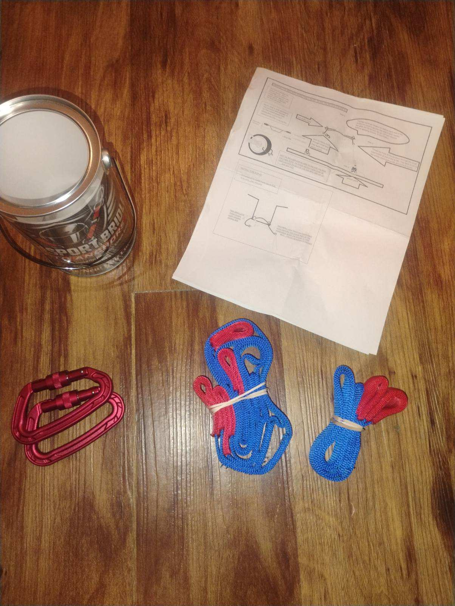
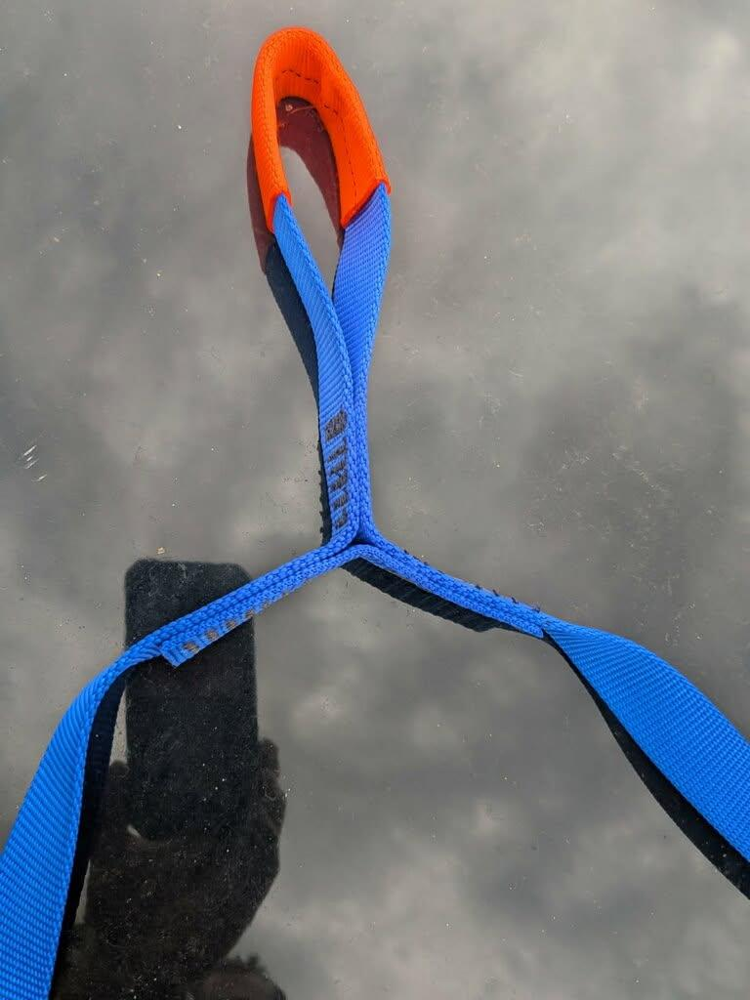
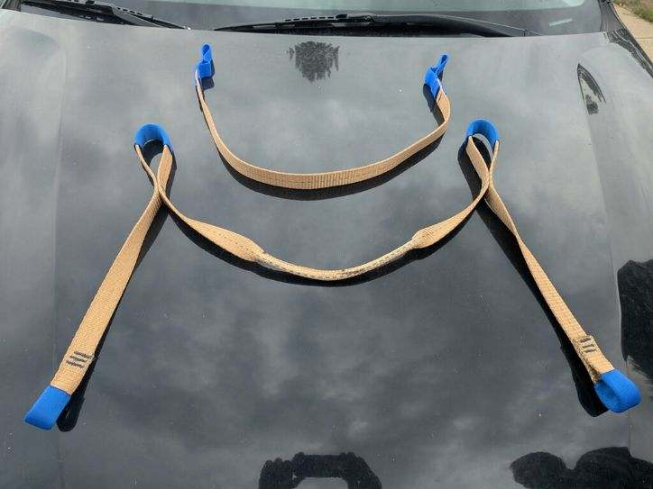
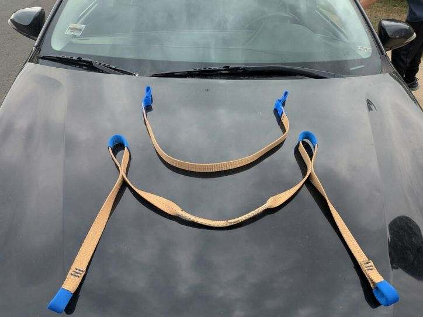
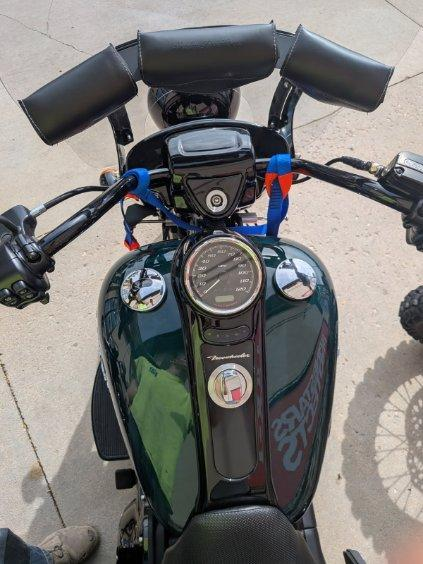

Designed to give riders a practical way to establish tie-down points across multiple motorcycle styles.
Price, warranty, load rating, shipping and final product claims must be confirmed before publishing.